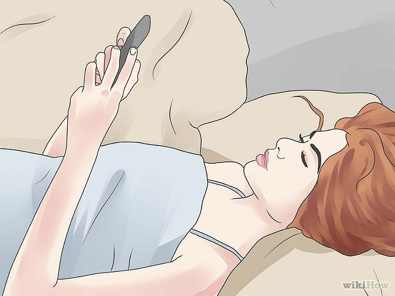
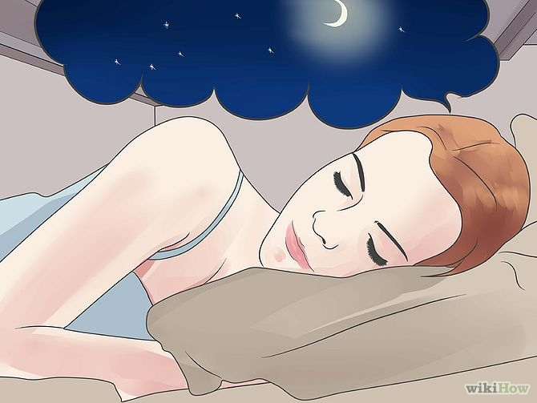
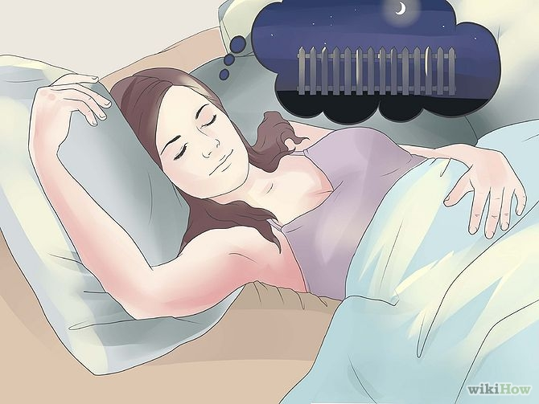
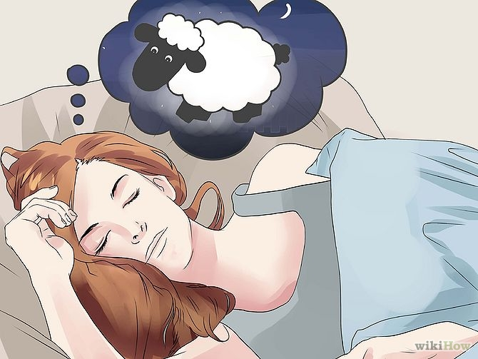
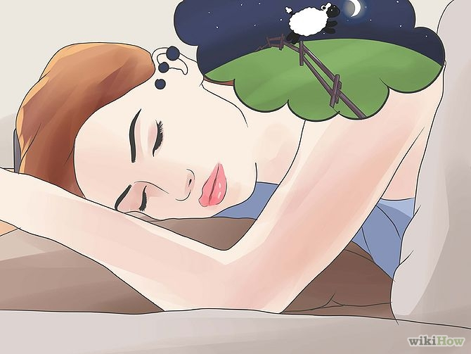
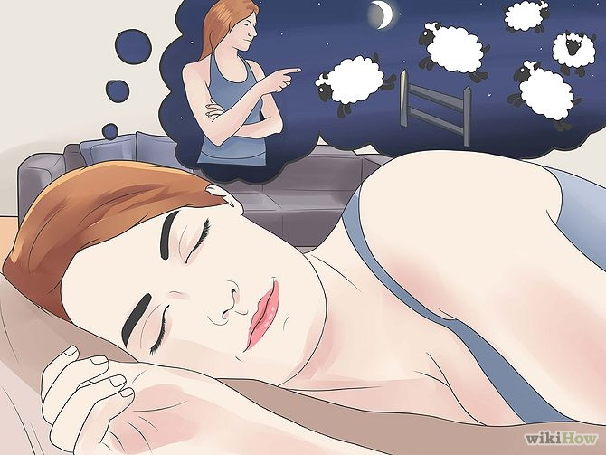
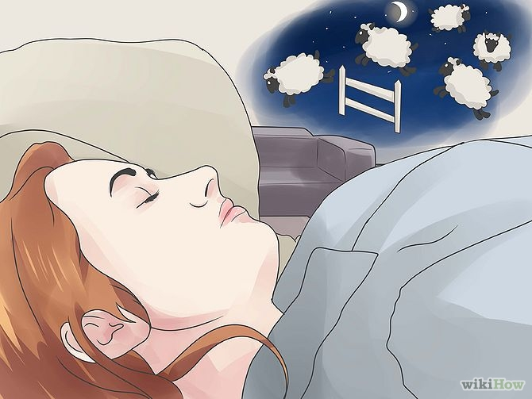

How to Count Sheep
∞
∞
∞
Having difficulties sleeping? One method that has been suggested over the ages is to count something. For some cultures, the famous symbol to count at night is that of the sheep. It's a visualization exercise that will create a gentle rhythm that may help you to fall asleep by banishing other thoughts and worries. And a good night's sleep is the best guarantee of good health, allowing you to wake up refreshed, ready to tackle any problems that might otherwise have kept you awake.
Steps
- 1. Lie down on your bed or couch and close your eyes.

- 2. Imagine a night sky, with small, white stars, and a crescent moon. Or, imagine a day sky, with a small, green hill, full of short, green grass.

- 3. Imagine a white fence right across the hill.

- 4. Visualize white, fluffy, plump sheep.

- 5. Imagine the sheep jumping over the white fence, one by one, one after another without stopping.

- 6. Alternatively, visualise yourself as the pastor of many sheep in the field, and you are counting them one by one to make sure that none gets lost.

- 7. Visualize this over and over again, counting, "1.. 2.. 3.. 4.. 5.. 6.." softly. Some people prefer to count in their mind, others out loud - this is up to you. Although, according to researchers at Oxford University there are better ways to help you sleep than counting objects. The more mental energy you use, the sleepier you get.

☻